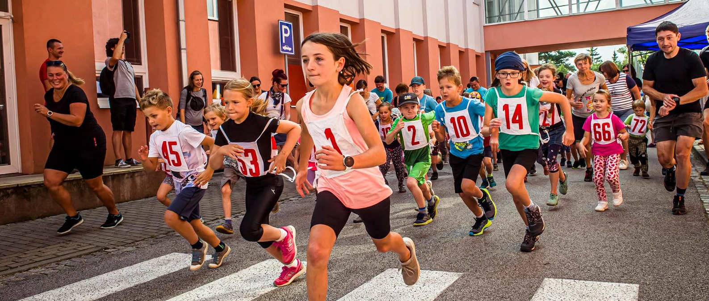

Start/Cíl
Vyzvednutí startovních tašek: od 9:00 do 10:30 v místě startu
(Startovní tašku nemusí vyzvednout závodník osobně)
Start: 11 hodin (všechny kategorie společně)
Limit: 3 hodiny (11:00 – 14:00)
Místo: ZŠ Horka-Domky (Václavské náměstí 44/12, Třebíč)
Zázemí: V prostorách tělocvičny najdete šatny i toalety. Využít můžete také úschovnu zavazadel
Parkování: Využít můžete parkoviště u Polikliniky
Kategorie
- Dorostenky 15 – 17 let (2008 – 2006)
Ženy 18 – 34 let (2005 – 1989)
Ženy 35 – 44 let (1988 – 1979)
Ženy nad 45 let (1978 a starší)
Dorostenci 15 – 17 let (2008 – 2006)
Muži 18 – 39 let (2005 – 1984)
Muži 40 – 49 let (1983 – 1974)
Muži nad 50 let (1973 a starší)
Pro zařazení do kategorie je rozhodující ročník narození.
* Dorostenci/dorostenky do 18 let mohou běžet pouze trať „Desítky“ se souhlasem svých odpovědných zástupců a jsou povinni při vyzvednutí startovních čísel doložit vyplněný a podepsaný formulář, ten najdete ZDE.
Platba
Účastnický poplatek činí ve všech kategoriích:
- při platbě připsané na náš účet do 31. 3. 2023 – 350 Kč
- při platbě připsané na náš účet do 14. 4. 2023 – 400 Kč
- při pozdějším přihlášení nebo platbě na místě – 450 Kč
- nesoutěžní běh rodičů s dětmi: dobrovolné vstupné
Přihlášeným přijde mail s číslem účtu, na které prosím uhraďte poplatek do 14 dnů. Pokud nedojde k zaplacení v termínu, vaše místo propadá. Jako variabilní symbol použijte číslo přihlášení u vašeho jména vygenerovaného při registraci. Do poznámky prosím připište vaše jméno a heslo „půlmaraton Třebíč“.
Při naplnění kapacity závodu se další přihlášení běžci řadí na čekací listinu. V případě posunutí se do startovní listiny vám přijde mail s výzvou k zaplacení registračního poplatku.
Případné storno platby: do 31. března vracíme celou částku, do 14. dubna polovinu, poté již startovné nevracíme (kvůli tisku účastnických listů, nákupu zásob atd.) Díky za pochopení.
Výhry
Vyhlášení výsledků proběhne pár minut po doběhu posledního závodníka.
Ceny čekají na první tři v každé kategorii.
Medaili dostane v cíli každý, jako pomátku na úspěšnéé dokončení závodu.
Upozornění
Na průběh závodu dohlíží kvalifikovaní zdravotníci, přesto všichni závodníci startují na vlastní nebezpečí a zodpovídají za svůj zdravotní stav. Cenné věci si neodkládejte v šatně, za odložené věci neručíme.
Přihlášením do závodu běžci souhlasí, že se jejich jméno objeví ve startovní a ve výsledkové listině. Zaregistrováním taktéž vyjadřují souhlas s tím, že na závodě bude pořizovaný obrazový záznam, který může pořadatel použít pro své marketingové potřeby.